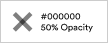
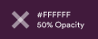
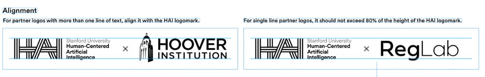
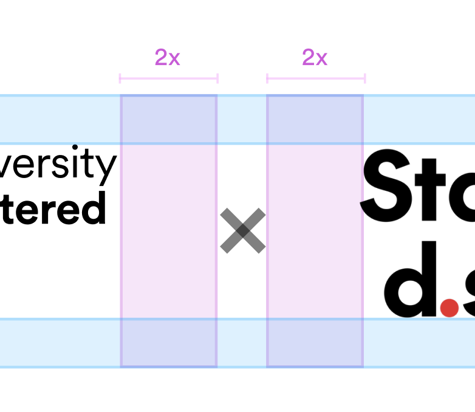
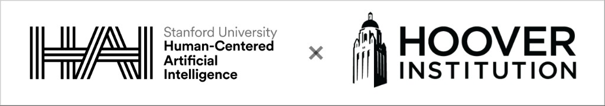
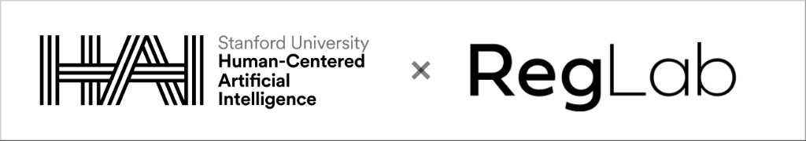
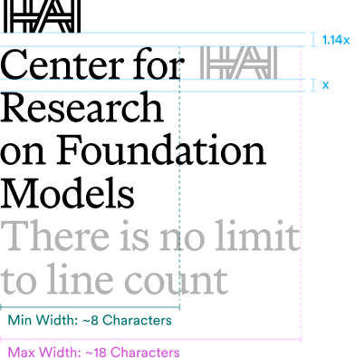
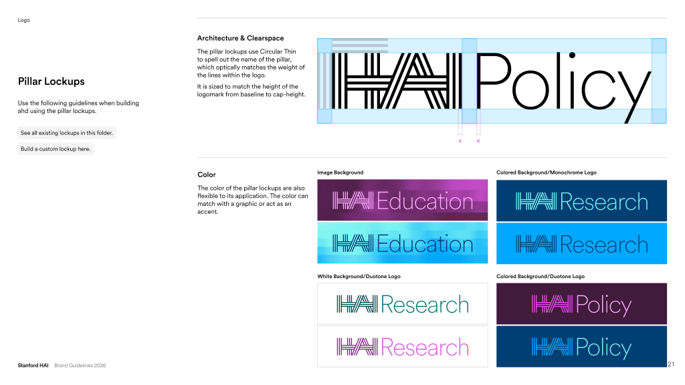
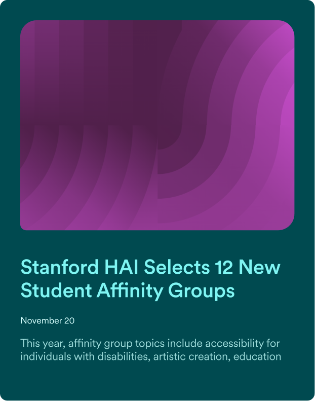

Human-centered
Warmth and accessibility in how HAI presents AI and its impact.
01
Six principles behind how HAI looks, feels, and adapts.
Warmth and accessibility in how HAI presents AI and its impact.
Disciplines meeting in the same room—a defining visual idea.
Measured, clear visuals that reinforce rigorous, objective insight.
Academic authority and ambition that elevates HAI’s presence.
Recognizable across audiences and levels of formality.
Clear place within Stanford without losing a distinctive presence.
02
Swatches for the primary palette. Click a color to copy hex or RGB.
Darker tones for backgrounds & text on neutrals. Brighter tones for graphics & text on dark backgrounds
03
Graphic gradients should combine colors that sit near each other on the brand rainbow. As a rule of thumb, if you would see two colors next to each other in a rainbow, they are OK to combine. These rules are built into the generator tools and summarized below.
Choose two brand colors to preview the blend and see whether the pairing is allowed.
Gradients add color and texture without distraction. Use high-contrast blends for hero graphics; low-contrast blends for recessive background fields.
Linear gradients appear throughout the brand as a quick way to bring color and texture into an asset without it feeling busy. It is recommended to use a light or dark tone for the large middle portion of the gradient so copy and graphics stay readable.
Weight gradient stop points around the edges so transitions happen quickly at the top and bottom, leaving a stable tone in the middle.
These are suggestions—more pairings are possible using the brand palette above. Click a color dot to swap it, or hover the preview to copy CSS or download a PNG.
Generates a random on-brand gradient with edge-weighted stops. Click the preview to copy CSS.
04
Circular for sans-serif UI and Marist for editorial headlines. Resize Marist slightly larger when pairing — different x-heights.
Licensed brand fonts for Stanford HAI communications. Use only the weights listed below.
Primary sans — Circular
Scientific Discovery
New AI tools find patterns in data
AI doesn't just speed up discovery. It can facilitate collaboration across disciplines, review literature, generate hypotheses, analyze data, and validate theories.
Today’s Seminar
Primary serif — Marist
Scientific Discovery
New AI tools find patterns in data
AI doesn't just speed up discovery. It can facilitate collaboration across disciplines, review literature, generate hypotheses, analyze data, and validate theories.
Don't use Marist as an eyebrow label.
Use in Google Workspace when brand fonts aren't available. No Prisma equivalent.
03
Primary logomark plus horizontal and vertical lockups. See the lockup sections below for collab, centers & labs, and pillar variants.

Logo — Collab lockups
When displaying the HAI logo alongside another institution, use these lockup rules.
On light backgrounds, the × separator is #000 at 50% opacity. Logos use their standard dark versions.

On dark backgrounds, the × separator is #FFF at 50% opacity. Logos are reversed (white).

Define x as the thickness of the vertical bars in the HAI logomark.


Multi-line and single-line partner logos on light and dark backgrounds.


Logo — Centers & labs
Center and lab lockups have a lot of variability. They can be created with three different weights within Circular or Marist. Any of the primary brand colors can be used.
Define x as the line height of the center or lab name.

The center lockups can be created with any of the styles below.
Stanford
AI Lab
Stanford
AI Lab
Stanford
AI Lab
Stanford
AI Lab
Stanford
AI Lab
Stanford
AI Lab
Logo — Pillar lockups
Use the following guidelines when building and using the pillar lockups.
Pillar lockup color is flexible to its application—it can match a graphic or act as an accent.

05
Create on-brand graphics with the generator tools, then drop them into Canva templates as hero or background elements.
Eight tools cover color fields, line work, and image-driven patterns. Each opens directly in the studio.
Graphics fall into two roles. The same export from any generator can serve either one—what changes is how you place it in the layout.
The graphic fills the canvas (or a large zone) and copy sits directly on top. Choose darker or denser palette tones so white or light type stays readable.
Rule: text overlaps the graphic.

The graphic is a focal point in its own zone. Copy lives in a separate solid area—typically the upper half or an open field—so nothing crosses the artwork.
Rule: no text overlaps the graphic.
The same export can drop into any Canva layout. Each format has a typical role and placement zone—hero or background.
Finished layouts live in the Stanford HAI Brand Kit. Export a PNG from the generator, then replace the placeholder in the matching template.
Essentials
Resources